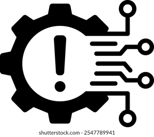
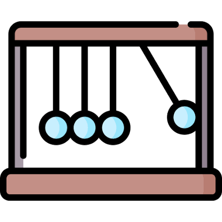
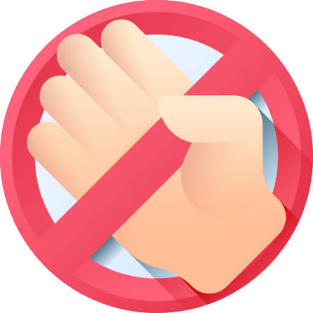

O teatro de produtividade é o esforço de parecer produtivo, em vez de fato produzir. Inclui manter o status “online” o dia todo, responder mensagens na hora para mostrar presença e lotar a agenda de reuniões.
O termo ganhou força com a popularização do trabalho remoto e híbrido. Sem a presença física no escritório, muitos profissionais passaram a sentir a necessidade de provar que estavam trabalhando, e muitos gestores passaram a desconfiar de quem não estava à vista.
Status sempre verde: manter o Teams ou o Slack “ativo” o dia todo, às vezes até com truques para o mouse se mexer sozinho. ⚡ Resposta instantânea: responder mensagens e e-mails na hora, mesmo fora do expediente, só para mostrar disponibilidade. 📅 Agenda lotada: marcar ou aceitar reuniões desnecessárias e tratar a agenda cheia como sinal de importância.
O último a sair: ficar até tarde sem necessidade, só para ser visto. 📊 Relatórios que ninguém lê: produzir slides, planilhas e documentos bonitos que não geram decisão nenhuma. 🗂️ Organizar em vez de fazer: passar horas arrumando o Notion, o app de tarefas ou a lista de prioridades sem executar nada. 📣 Rotina de vitrine: postar nas redes sobre a rotina “de alta performance” mais do que viver o que está postando.

Cultura de controle: empresas que medem horas trabalhadas em vez de entregas. Medo de perder o emprego: em tempos de demissões, as pessoas querem “se mostrar”. Falta de visibilidade no home office: a necessidade de provar presença cresce. Cultura do hustle: estar “sem tempo” virou símbolo de status e de valor pessoal. Métricas erradas: o que é fácil de medir (tempo online) ganha mais peso do que o que realmente importa (impacto).

Cansaço e burnout: a pressão constante para parecer ocupado desgasta. Perda de foco: interrupções o tempo todo impedem o trabalho profundo. Desperdício: tempo e dinheiro gastos em atividades que não geram resultado. Injustiça: quem trabalha bem, mas sem alarde, fica invisível, e quem faz mais “show” pode ser reconhecido. Desconfiança: a relação entre equipes e gestores fica tensa.

Medir resultados e entregas, não horas online. Reduzir reuniões e apostar em comunicação assíncrona. Respeitar horários de foco e de desconexão. Construir uma cultura de confiança. Definir metas claras e objetivas.
64% dos remotos mantêm o app de mensagens com status “ativo” mesmo sem trabalhar (BambooHR) 43% gastam mais de 10 horas por semana em tarefas performáticas (Visier) 32% dos gerentes dizem que o objetivo principal do retorno ao escritório é rastrear funcionários (BambooHR)
75% respondem rápido aos colegas ou deixam a tela ligada mesmo sem estar trabalhando Visier 42% aparecem e se apresentam só para serem vistos pelos chefes BambooHR ~2h de um turno de 8h passam sem trabalhar (76% do tempo é trabalho efetivo) BambooHR 37% dos presenciais andam pelo escritório para serem vistos BambooHR
Dado curto e diferente do que todo mundo costuma citar, o que ajuda na originalidade: 61% dos pais e cuidadores priorizam o trabalho remoto, contra 38% dos não cuidadores. 63% dos trabalhadores com deficiência preferem o formato virtual, contra 51% dos sem deficiência.
Sobre o projeto: Site desenvolvido por Guilherme Nere como atividade de HTML e CSS. Contato: guilhermenere18@gmail.com Rodapé: © 2026 — Teatro de Produtividade. Projeto acadêmico.